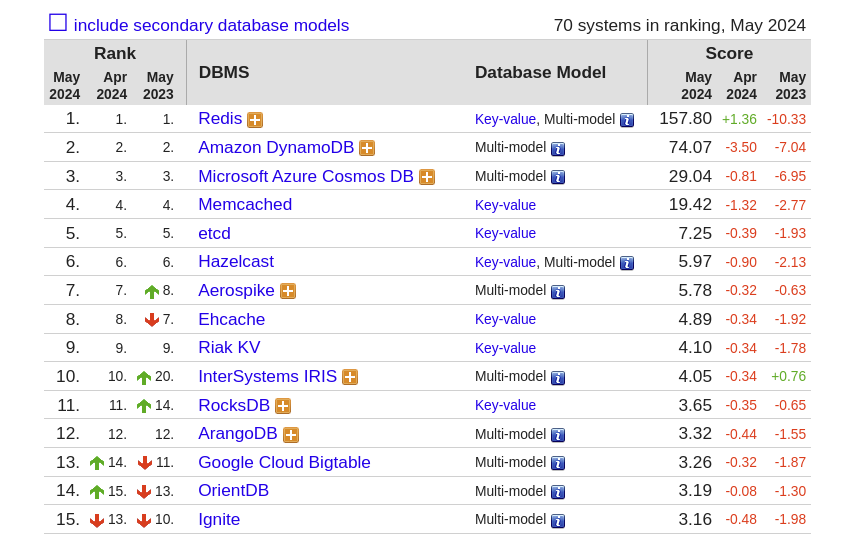
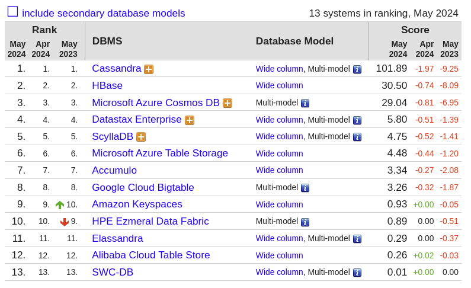
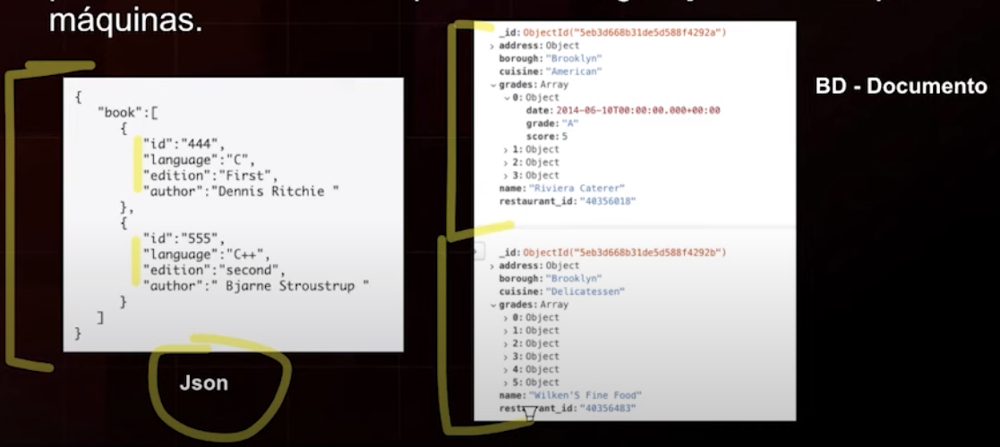
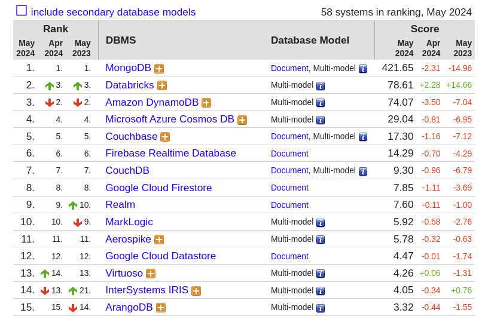

Disciplinas
-
BANCO DE DADOS-T01-2024-1 Concluído
Materiais
Vídeo 2 - Banco de Dados - Introdução a Bancos de Dados Não Relacionais - NoSQL. sendProfessor ministrante: José Eduardo Santarem Segundo.
Conteúdo
BANCO DE DADOS NoSQL.
- NoSQL quer dizer exatamente isso, não SQL ou não Relacional.
- Atualmente o termo NoSQL foi estendido para "Not Only SQL" - Não Somente SQL.
- Os Bancos NoSQL tem tido como principal insumo o Big Data e tem sido pautado muitas vezes como elemento importante no desenvolvimento de Data Science.
BANCOS RELACIONAIS.
- Os bancos mais utilizados durante muitos anos, padrão para a grande maioria das necessidades de armazenar dados desde 1970.
- Formato de Tabelas (linhas x colunas)
- Uso de PK (Chave Primaria) e FK (Chave Estrangeira) para conectar dados entre tabelas.
- Alguns limites de uso passaram a ser notados:
- Escala (petabytes)
- Perda de performance e dificuldade de processar relacionamentos em grandes conjunto de dados.
- Dificuldade com esquemas complexos.
BANCOS NoSQL - HISTÓRIA.
- Criado por Carlo Strozzi em 1998, com a estrutura de um banco relacional, sendo aberto e sem o SQL.
- Em 2006, o artigo: "BigTable: A Distributed Storage System for Structured Data", publicado pelo Google, reacende o tema sobre os bancos NoSQL.
- Em 2009, a discussão sobre NoSQL é retomada por Eric Evans (Rackspace), na reunião organizada por Johan Oskarsson, da Last.fm, em 11 de junho de 2009 em São Francisco nos EUA.
- Nos últimos anos, o uso de bancos de dados NoSQL tem aumentado de forma significativa.
BANCOS NoSQL – CARACTERÍSTICAS
- Não usam SQL;
- Geralmente são open-source;
- Formas diferentes de organização (não usam tabelas): usam grafos, documentos, colunas, entre outros, o que garante melhor performance.
- Clusterização
- Usam esquemas flexíveis (formatos diferentes para o mesmo registro).
- Persistência Poliglota;
- Escala Horizontal;
- Replicação Nativa, entre outras...
BANCOS NoSQL – CARACTERÍSTICAS
- Escalonamento horizontal (Scaling out) é a capacidade de aumentar a quantidade de computadores.
- Escalonamento vertical (Scaling up) é a capacidade de alocar mais recursos ao computador (memória e processamento).
- Escalonamento horizontal é sempre mais complexo.
MODELOS NoSQL: CHAVE-VALOR.
- Em chave-valor, o banco tem sua formação a partir de estruturas de chaves, que são associadas a um único valor.
- Estrutura flexível e própria para armazenamento de big data.
- Favorece a escalabilidade ao invés da consistência.
- Exemplos: Redis, DynamoDB, Ryak, Azure Table Storage, entre outros.
Nome_1010: José
Endereco_1010: Rua Y 9
Cidade_1010: São Paulo, Ribeirão Preto
Funcao_1010: DBA

Fonte: https://db-engines.com/en/ranking/key-value+store
MODELOS NoSQL: COLUNAS.
- No modelo colunas, o banco de dados faz armazenamento em linhas particulares de tabela.
- Esse esquema é o oposto dos bancos relacionais.
- O armazenamento em colunas é similar a uma tabela, onde cada linha pode ter uma ou mais colunas. O número de colunas por linha pode variar.
- Exemplos: Hbase, Cassandra, Hypertable, Apache Flink, etc.
Rank:
Fonte: https://db-engines.com/en/ranking/wide+column+store
MODELOS NoSQL: GRAFOS.
- Um grafo é formado por vértices (pontos) e arestas (ligações entre os pontos).
- Semelhante ao modelo relacional, com estrutura de relacionamento por meio de atributos.
- Muito usado em redes sociais, bioinformática e estrutura de bancos semânticos.
- Exemplos: Neo4J, Virtuoso, ArangoDB.
Fonte: https://db-engines.com/en/ranking/graph+dbms
MODELOS NoSQL: DOCUMENTOS.
- Dados são compreendidos como documentos.
- Estrutura totalmente flexível e não precisa ter colunas pré-montadas, como é o caso dos bancos de dados colunares.
- Especialmente eficiente para tratar dados não estruturados, já que cada documento pode ter um formato diferente.
- Pense no documento como um arquivo Json.
- Exemplos: MongoDB, Elastic, IBM Domino, CouchBase.
Json - É um formato de intercâmbio de dados. Fácil de entender por humanos e também para análise, geração e leitura por máquinas.
Rank:
POR QUE USAR BANCOS NoSQL?
- Dificuldade em modelar bancos de dados complexos, com inúmeros joins por exemplo.
- Necessidade de implementar bancos de dados com estruturas flexíveis.
- Considerar escalonamento:
- Escalonamento em um banco de dados relacional é muito complexo por sua natureza relacional.
- O modelo flexível favorece muito o escalonamento em bancos NoSQL.
- Considerar consistência:
- Os bancos de dados relacionais são muito consistentes. A consistência está no DNA dos bancos relacionais.
- Um banco de dados NoSQL não tem como premissa garantir a consistência, isso acontece de forma eventual.
- Considerar disponibilidade:
- O banco relacional não trabalha de forma natural com distribuição de dados, portanto tem dificuldade com a questão de disponibilidade para grandes cargas de dados.
- Bancos NoSQL possuem alto nível de distribuição, com possibilidade de atender grandes fluxos de solicitações de dados.
BANCOS NoSQL.
- Considerar o uso sempre que o volume de dados for muito grande.
- Bancos de dados relacionais continuam funcionando muito bem!!
- Os bancos NoSQL não vieram substituí-los.
- Avalie sempre a necessidade e as características necessárias para escolher entre Relacional ou NoSQL, e fazendo a opção, deverá escolher qual o produto a usar de acordo com as necessidades do projeto.